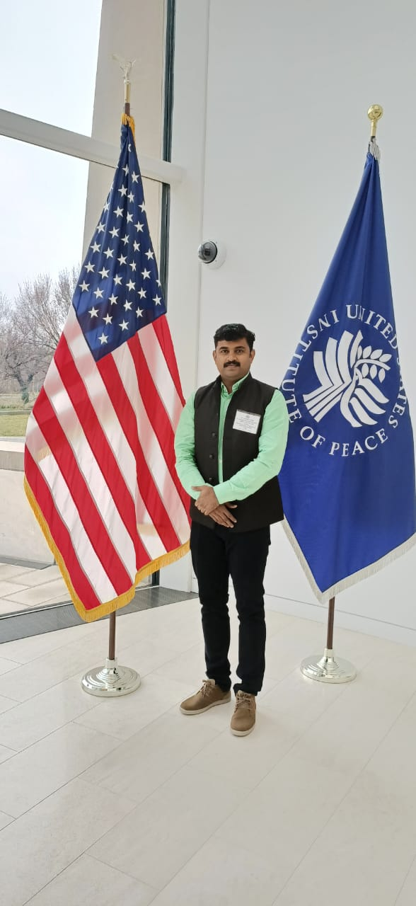
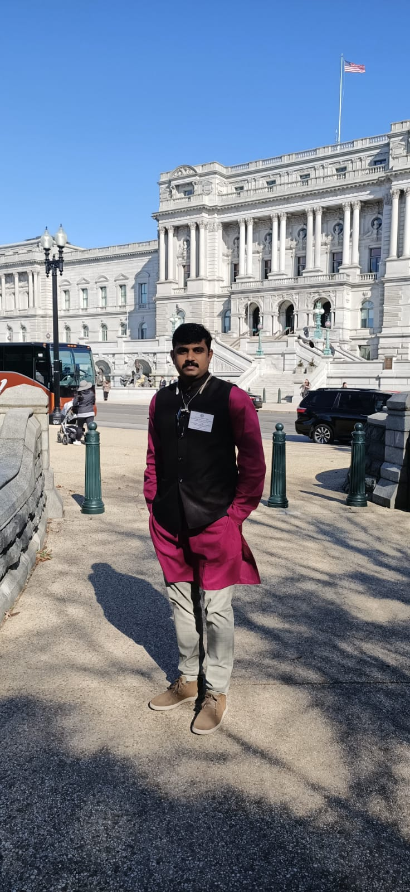
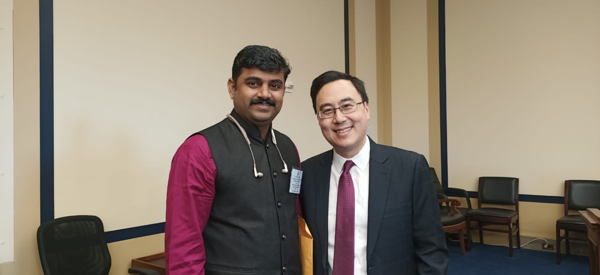
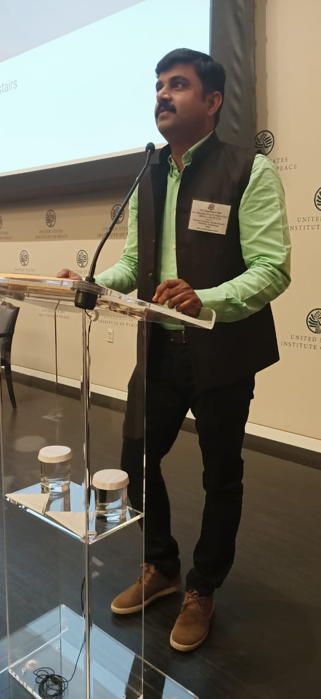
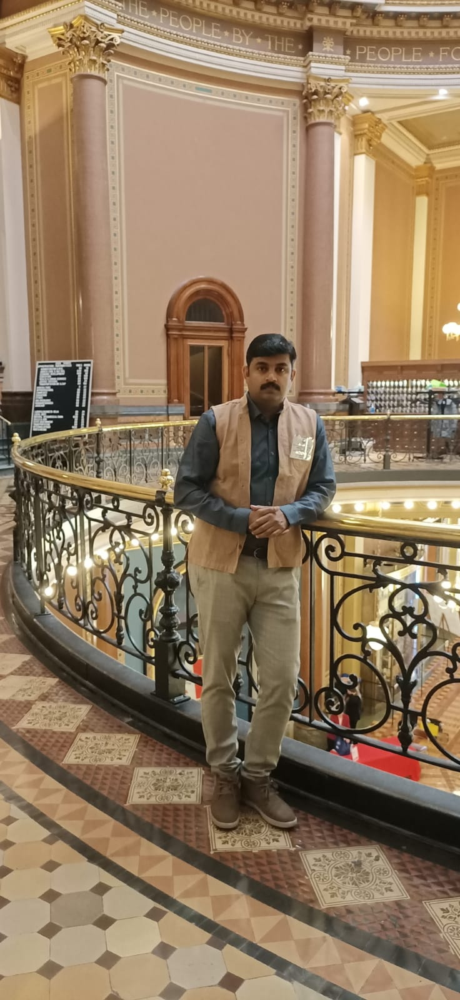
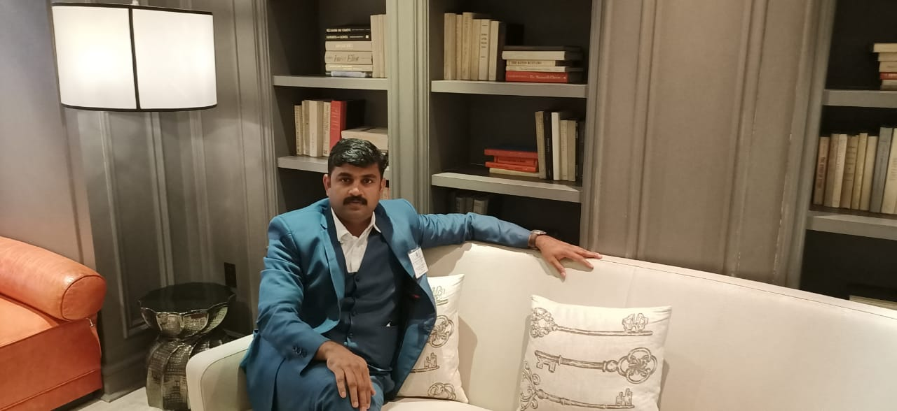
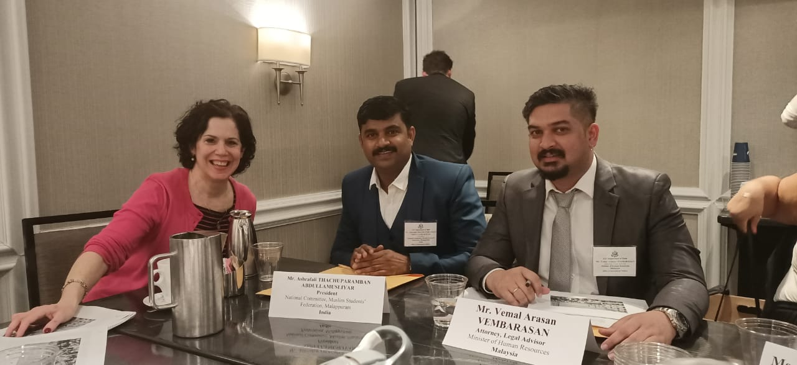
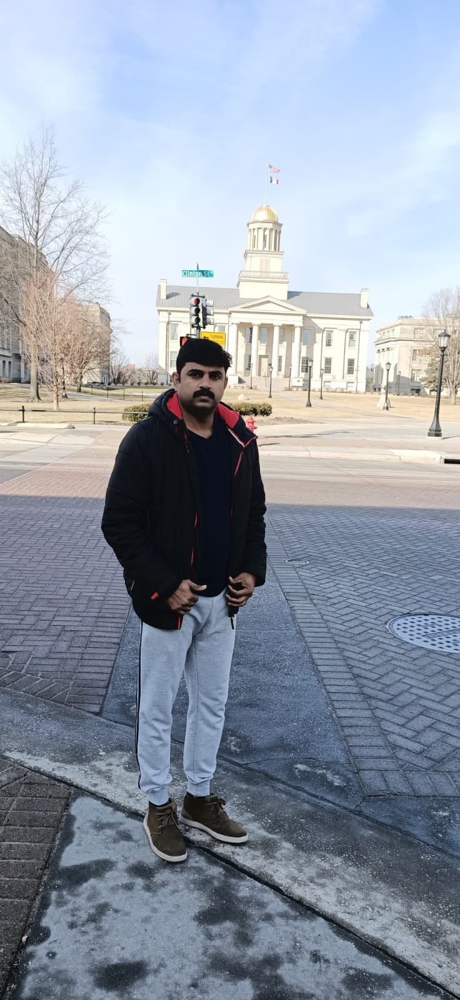

National General Secretary, IUMYL
T.P.
Asharafali
ടി.പി. അഷറഫലി
ദേശീയ ജനറൽ സെക്രട്ടറി, മുസ്ലീം യൂത്ത് ലീഗ്
National General Secretary, IUMYL
ദേശീയ ജനറൽ സെക്രട്ടറി, മുസ്ലീം യൂത്ത് ലീഗ്
T.P. Asharafali: The Valiant Face of Student Politics
Reminiscent of the stirring lines of poet P. Bhaskaran, T.P. Asharafali's political journey is one characterized by intense passion and relentless struggles. It is a journey of unwavering public service, deeply rooted in understanding the true essence of social work from both within and without. Originating from student politics, his journey traversed through the youth movement and further into to the responsibilities within mass political movements, sculpting a dedicated political life.
Leader of the Masses
Born on May 12, 1982, to T.P. Abdullah Musliyar and Fathima in Edakkara, Nilambur, Asharafali meticulously built a strong leadership path ascending through the ranks. His educational foundation spans Edakkara Govt. Higher Secondary School, Sree Vivekananda Higher Secondary School, Chungathara Marthoma College, EMS Memorial Co-operative College Thali, and SAFI Institute Vazhayur. He ignited his public life as the MSF General Secretary of the Edakkara Musliyarangadi unit. Demonstrating profound sincerity and devotion to the people, he systematically fulfilled responsibilities ranging from Panchayat Secretary and President, to Constituency Joint Secretary and President.
In 2002, marking a historic victory at Chungathara Marthoma College—an institution historically considered an SFI stronghold—Asharafali, then Constituency Treasurer, was elected University Union Councilor by a margin of 13 votes. This triumph became the catalyst for the KSU-MSF alliance to subsequently capture the University Union.
Unwavering Fighting Spirit
He subsequently entered an era of fierce political activism globally as the MSF Malappuram District Secretary, spearheading relentless protests and resistance. His bold actions, including a black flag demonstration against controversial remarks made by the then Opposition Leader V.S. Achuthanandan regarding Malappuram district, brought him significant statewide prominence.
As MSF State Joint Secretary at Calicut University, he tirelessly opened new fronts of agitation, fighting uncompromisingly for student causes. Whether staging protests against late-arriving university staff or initiating strategic blockades of the examination block, his dedication to advocating for students remained paramount.
Elected as MSF State General Secretary in 2009, he entered a crucial phase that deeply impacted and matured his political trajectory. A monumental milestone was bringing former President Dr. A.P.J. Abdul Kalam to the 2011 MSF conference at Calicut University, elevating Asharafali’s leadership stature immensely. At this very venue, Dr. Kalam announced a Civil Service Examination Coaching Program in the name of Shihab Thangal, igniting a wave of inspiration among students. The same conference proudly marked the inception of 'Haritha' (the female student wing), 'Medifed', and 'Techfed', cementing the invaluable nature of his interventions.
Champion of Development Projects
Elected MSF State President in 2012, Asharafali solidified his enduring presence in Kerala politics. Achieving historical precedence, he became the first Syndicate member in MSF's history. He captured public affection through impactful, resonant initiatives such as the 'Unarthu Jatha' awareness campaign against child abuse, campaigns supporting Endosulfan victims, the 'Neerkkudam' project providing water for birds during summer, and launching 'Missive', the organizational mouthpiece.
In 2015, carving out a new path of public service, he secured a spectacular victory traversing from the Karuvarakundu division to the Malappuram District Panchayat. For five remarkable years, he stood at the helm of diverse development projects, his steadfast efforts and capabilities becoming a shining beacon that never faltered amidst adversities.
Moving Forward with Vigor
With the formation of the MSF National Committee in 2017, T.P. Asharafali was deservedly elected its inaugural National President. He played a pivotal frontline role in expanding the movement's footprint into central universities and implementing crucial educational aids like school kits, scholarships, and fellowships. Further highlighting his leadership abilities, he was selected as India's representative to participate in the prestigious International Visitor Leadership Program organized by the US State Department during the 2020 American Presidential election.
Currently serving as the National General Secretary of the Muslim Youth League, Asharafali is dynamically advancing his academic pursuits, engaging in doctoral research (PhD) in Islamic Studies at Jamia Hamdard University, New Delhi. Empowered by the relentless trust and profound support of the masses, his resolute journey moving forward aims to enshrine his distinctive mark in the public sphere whilst steadfastly upholding core political values. His family comprises his wife Tabassum, children Abdullah Salim Bin Ali, Rashiq Bin Ali, and Aisa Fatima Bint Ali. His brother Salim Edakkara serves as the State Secretary of the Sunni Yuvajana Sangam (SYS).
ഉയരും ഞാൻ നാടാകെ, പടരും ഞാൻ, ഒരു പുത്തനുയിർ നാടിനേകിക്കൊണ്ടുയരും വീണ്ടും എന്ന പി. ഭാസ്കരൻ കവിതയെ അനുസ്മരിക്കുംവിധം തീക്ഷണവും സമരോജ്ജ്വലവുമായ ഒരു രാഷ്ട്രീയജീവിതമാണ് ടി.പി. അഷറഫലിയുടേത്. പൊതുപ്രവർത്തനത്തിന്റെ അകവും പുറവും അറിഞ്ഞുള്ള ജനസേവനയാത്ര. വിദ്യാർഥിരാഷ്ട്രീയത്തിൽനിന്ന് ആരംഭം കുറിച്ച ആ പൊതുപ്രവർത്തനജീവിതം യുവജനപ്രസ്ഥാനത്തിലേക്കും പിന്നീട് ബഹുജനരാഷ്ട്രീയത്തിന്റെ ഭാരവാഹിത്വങ്ങളിലേക്കും സഞ്ചരിച്ചപ്പോഴും അകമഴിഞ്ഞ ഒരു രാഷ്ട്രീയജീവിതത്തിനുടമയായി. ഉത്തരവാദിത്തങ്ങൾ മാറിവന്നപ്പോഴും സമരതന്ത്രങ്ങളുടെ തീച്ചൂളകളിലേക്ക് സ്വയം ഇറങ്ങിച്ചെന്നപ്പോഴും ജനഹൃദയങ്ങളുടെ ഇഷ്ടം നേടിയെടുക്കാനും ജനങ്ങൾക്കിടയിലൊരാളായി തുടരാനും അദ്ദേഹം എന്നും പരിശ്രമിച്ചു.
ജനമനസ്സുകളുടെ അധിപൻ
സംഘടനാപ്രവർത്തനങ്ങളിലൂടെ സുദൃഢമായ നേതൃപാത പണിത അഷറഫലി 1982 മെയ് 12ന് ടി.പി. അബ്ദുള്ള മുസ്ല്യാരുടെയും ഫാത്തിമ്മയുടെയും മകനായി നിലമ്പൂരിലെ എടക്കരയിലാണ് ജനിച്ചത്. എടക്കര ഗവ. ഹയർസെക്കന്ററി സ്കൂൾ, ശ്രീ വിവേകാനന്ദ ഹയർ സെക്കന്ററി സ്കൂൾ, ചുങ്കത്തറ മാർത്തോമ കോളേജ്, EMS മെമ്മോറിയൽ കോപ്പറേറ്റീവ് കോളേജ് തളി, സാഫി ഇൻസ്റ്റിറ്റിയൂട്ട് വാഴയൂർ എന്നിവിടങ്ങളിൽ വിദ്യാഭ്യാസം.എംഎസ്എഫിന്റെ എടക്കര മുസ്ലിയാരങ്ങാടി യൂണിറ്റ് ജനറൽ സെക്രട്ടറിയായാണ് പൊതുപ്രവർത്തനത്തിലേക്ക് അദ്ദേഹം നാന്ദി കുറിച്ചത്. തുടർന്ന് പഞ്ചായത്ത് ജനറൽ സെക്രട്ടറി, പ്രസിഡന്റ്, നിയോജകമണ്ഡലം ജോയിന്റ് സെക്രട്ടറി, പ്രസിഡന്റ് തുടങ്ങിയ ഉത്തരവാദിത്തങ്ങൾ നിർവഹിച്ചു. ഓരോ നേതൃത്വം ഏറ്റെടുക്കുമ്പോഴും ജനങ്ങളോടും പാർട്ടിയോടും തികഞ്ഞ ആത്മാർഥതയും സ്നേഹവും പുലർത്താൻ അഷറഫലി പ്രയത്നിച്ചു.
2002 കാലം. എസ്.എഫ്.ഐയുടെ ചെങ്കോട്ടയെന്ന് പേരുകേട്ട ചുങ്കത്തറ മാർത്തോമ കോളേജ്. നിയോജകമണ്ഡലം ട്രഷറർ ആയിരുന്ന അഷറഫലി 13 വോട്ടിന്റെ ചരിത്രവിജയത്തിൽ യൂണിവേഴ്സിറ്റി യൂണിയൻ കൗൺസിലറായി തിരഞ്ഞെടുക്കപ്പെടുന്നു. പിൽക്കാലത്ത് കെഎസ്യു- എംഎസ്എഫ് സഖ്യം യൂണിവേഴ്സിറ്റി യൂണിയൻ പിടിച്ചെടുക്കാൻ കാരണമായ വിജയത്തിനായിരുന്നു 2002ൽ അഷറഫലി വഴിമരുന്നിട്ടത്.
മുട്ടുമടക്കാത്ത പോരാട്ടവീര്യം
തുടർന്ന് സമരതീവ്രമായ ഒരു രാഷ്ട്രീയകാലത്തിലേക്കാണ് അഷറഫലി കാലെടുത്തുവെച്ചത്. എംഎസ്.എഫിന്റെ മലപ്പുറം ജില്ലാ സെക്രട്ടറിയായി തിരഞ്ഞെടുക്കപ്പെടുകയും പ്രതിഷേധങ്ങളുടെയും മുട്ടുമടക്കാത്ത ചെറുത്തുനിൽപുകളുടെയും പോരാട്ടകാലത്തിന് നേതൃത്വം വഹിക്കുകയും ചെയ്തു. അക്കാലത്ത് പ്രതിപക്ഷനേതാവായിരുന്ന വിഎസ് അച്യുതാനന്ദന്റെ മലപ്പുറം ജില്ലാ പരാമർശത്തിനെതിരെ കരിങ്കൊടി പ്രതിഷേധവുമായി മുന്നിട്ടിറങ്ങി. ഈ പോരാട്ടവീര്യം അദ്ദേഹത്തെ സംസ്ഥാനരാഷ്ട്രീയത്തിലും ശ്രദ്ധേയനാക്കി.
വിദ്യാർത്ഥികൾക്കിടയിലും പുതിയ സമരമുഖങ്ങൾ തുറക്കാൻ അഷറഫലിക്ക് കഴിഞ്ഞു. കാലിക്കറ്റ് സർവകലാശാലയിൽ എംഎസ്എഫ് സംസ്ഥാന ജോയിന്റ് സെക്രട്ടറി ആയിരുന്ന കാലത്ത് സർവകലാശാല ജീവനക്കാർ വൈകി വരുന്നതിനെതിരെ നടത്തിയ സമരം ഉൾപ്പെടെ വിദ്യാർഥികളുടെ ഓരോ വിഷയത്തിലും അക്ഷീണമായ ഇടപെടലുകൾ അദ്ദേഹം നടത്തി. പരീക്ഷാഭവൻ ഉപരോധം ഉൾപ്പെടെയുള്ള സമരതന്ത്രങ്ങളുപയോഗിച്ച് വിദ്യാർഥി പ്രശ്നങ്ങളിൽ വിട്ടുവീഴ്ചയില്ലാത്ത പോരാട്ടം നടത്തി.
2009 കാലഘട്ടം. എംഎസ്എഫ് സംസ്ഥാന ജനറൽ സെക്രട്ടറി ആയി തിരഞ്ഞെടുക്കപ്പെട്ട സമയം. അഷറഫലിയുടെ രാഷ്രീയഭാവിയെ ശക്തിപ്പെടുത്തുന്നതും പക്വതയുള്ളതാക്കുന്നതുമായ ഒരു കാലഘട്ടത്തിനാണ് അന്ന് തുടക്കം കുറിക്കപ്പെട്ടത്. 2011ൽ കാലിക്കറ്റ് സർവകലാശാലയിൽ നടന്ന എംഎസ്എഫ് സമ്മേളനത്തിൽ മുൻ രാഷ്ട്രപതി എ.പി.ജെ. അബ്ദുൾ കലാമിനെ പങ്കെടുപ്പിച്ചത് വലിയ ശ്രദ്ധ പിടിച്ചുപറ്റിയ നേട്ടമായിരുന്നു. അഷറഫലിയുടെ ഭാരവാഹിത്വത്തെ ചോദ്യംചെയ്യാനിടയില്ലാത്ത വിധം മഹത്വത്തിലേക്ക് ഉയർത്തപ്പെട്ടതിന്റെ ആദ്യപടി! ഒപ്പം ആ വേദിയിൽവെച്ച് ശിഹാബ് തങ്ങളുടെ നാമധേയത്തിൽ സിവിൽ സർവീസ് പരീക്ഷ പരിശീലനപദ്ധതി കലാം പ്രഖ്യാപിച്ചത് വിദ്യാർഥികളെയും പ്രവർത്തകരെയും ഒന്നടങ്കം പ്രചോദിപ്പിക്കുന്നതും ആവേശം കൊള്ളിക്കുന്നതുമായി. അതേ സമ്മേളനത്തിലാണ് വിദ്യാർഥിനി സംഘടനയായ 'ഹരിത'യുടെ പിറവിയും. എംഎസ്എഫിന്റെ മെഡിക്കൽ വിദ്യാർഥി വിഭാഗമായ മെഡിഫെഡ്, ടെക്നിക്കൽ വിഭാഗമായ ടെക്ഫെഡ് എന്നിവയും ആ സമ്മേളനവേദിയിൽ പ്രഖ്യാപിക്കപ്പെട്ടു. അഷറഫലി എന്ന പൊതുപ്രവർത്തകന്റെ ഇടപെടൽ എത്രത്തോളം വിലപ്പെട്ടതാണെന്ന് തെളിയിക്കുന്ന നേട്ടങ്ങൾ!
വികസനപദ്ധതികളുടെ അമരക്കാരൻ
2012ൽ എംഎസ്എഫിന്റെ സംസ്ഥാന അധ്യക്ഷനായി തിരഞ്ഞെടുക്കപ്പെട്ടതോടെ കേരള രാഷ്ട്രീയത്തിലെ നിരന്തര സാന്നിധ്യമായി അഷറഫലി മാറി. എംഎസ്എഫിന്റെ ചരിത്രത്തിലെ ആദ്യ സിൻഡിക്കേറ്റ് അംഗം എന്ന നേട്ടവും അഷറഫലി സ്വന്തമാക്കി. തുടർന്ന് ജനശ്രദ്ധ പിടിച്ചുപറ്റുന്ന ഒരുപിടി പ്രവർത്തനങ്ങളിലൂടെ അദ്ദേഹം തിരമാല കണക്കെ ജനഹൃദയങ്ങളിൽ ആർത്തിരമ്പി. കുട്ടികൾക്കെതിരെയുള്ള അക്രമങ്ങളെക്കുറിച്ച് ബോധവൽകരണം നടത്തുന്ന ഉണർത്തുജാഥയും എൻഡോസൾഫാൻ ദുരിതബാധിതർക്കായി ക്യാമ്പയിനുകൾ, പറവകൾക്കൊരു നീർക്കുടം പദ്ധതി, സംഘടനാ മുഖപത്രികയായ മിസീവിന്റെ ആരംഭം എന്നിവയെല്ലാം അഷറഫലിയുടെ രാഷ്ട്രീയയാത്രയ്ക്ക് ഊർജമേകിയ പ്രവർത്തനങ്ങളായിരുന്നു.
2015ൽ മലപ്പുറം ജില്ലാ പഞ്ചായത്തിലേക്ക് കരുവാരക്കുണ്ട് ഡിവിഷനിൽനിന്ന് തിളക്കമാർന്ന വിജയത്തോടെ പൊതുപ്രവർത്തനത്തിന്റെ പുതിയ വഴികളിലേക്ക് അഷറഫലി നടന്നുകയറി. അഞ്ചുവർഷം വിവിധ വികസനപദ്ധതികളുടെ അമരക്കാരനായി നിലകൊണ്ടു. പ്രതിസന്ധികളിൽ തളരാതെ കഴിവും പ്രയത്നവും മൂലധനമാക്കി അദ്ദേഹം നടത്തിയ പദ്ധതികൾ ഒരിക്കലും തിളക്കം മങ്ങാതെ നിൽക്കുന്നു.
വീറോടെ മുന്നോട്ട്
2017ൽ എംഎസ്എഫ് ദേശീയ കമ്മിറ്റി രൂപീകരിച്ചപ്പോൾ ആദ്യ ദേശീയ പ്രസിഡന്റായി തിരഞ്ഞെടുക്കപ്പെട്ടതും ടി പി അഷറഫലിയായിരുന്നു. കേന്ദ്ര സർവകലാശാലകളിലേക്ക് എംഎസ്എഫിന്റെ പ്രവർത്തനം വ്യാപിപ്പിക്കുന്നതിൽ മുന്നിരയിൽ നിന്നതും അഷറഫലിയായിരുന്നു. വിദ്യാർഥികൾക്ക് സ്കൂൾ കിറ്റുകളും സ്കോളർഷിപ്പുകളും ഫെലോഷിപ്പുകളും നടപ്പാക്കുന്നതിൽ അദ്ദേഹത്തിന്റെ പങ്ക് ചെറുതല്ലായിരുന്നു. 2020ൽ അമേരിക്കൻ പ്രസിഡന്റ് ഇലക്ഷൻ അടിസ്ഥാനമാക്കി യുഎസ് സ്റ്റേറ്റ് ഡിപാർട്മെന്റ് സംഘടിപ്പിച്ച ഇന്റർനാഷണൽ വിസിറ്റർ ലീഡർഷിപ്പ് പ്രോഗ്രാമിന്റെ ഭാഗമായി ഇന്ത്യയുടെ പ്രതിനിധിയായി പങ്കെടുക്കാനുള്ള അവസരവും അഷറഫലിക്ക് ലഭിച്ചു.
നിലവിൽ മുസ്ലീം യൂത്ത് ലീഗിന്റെ ദേശീയ ജനറൽ സെക്രട്ടറിയായി പ്രവർത്തിക്കുന്ന അഷറഫലി ന്യൂഡൽഹിയിലെ ജാമിഅ ഹംദർദ് സർവകലാശാലയിൽ ഇസ്ലാമിക് സ്റ്റഡീസിൽ ഗവേഷണം ചെയ്യുന്നു. ജനങ്ങളുടെ വിശ്വാസവും പിന്തുണയും കരുത്താക്കി പൊതുരംഗത്ത് തന്റേതായ വ്യക്തിമുദ്ര പതിപ്പിക്കാനും രാഷ്ട്രീയമൂല്യങ്ങളെ മുറുകെപ്പിടിച്ച് പോരാടാനുമുള്ള സഞ്ചാരദിശയിലാണ് അഷറഫലി. ഭാര്യ തബസു. മക്കൾ അബ്ദുള്ള സാലിം ബിൻ അലി, റാഷിഖ് ബിൻ അലി, ഐസ ഫാത്തിമ ബിന്ത് അലി. സഹോദരൻ സലീം എടക്കര സുന്നി യുവജന സംഘം സംസ്ഥാന സെക്രട്ടറിയാണ്
National General Secretary, IUMYL
Representing youth leadership at the national level. Also pursuing PhD in Islamic Studies at Jamia Hamdard University.
US International Visitor Leadership Program
Represented India in the prestigious US State Department program based on the American Presidential election.
First National President, MSF
Spearheaded the expansion of the movement to various central universities across India.
ദേശീയ ജനറൽ സെക്രട്ടറി,
മുസ്ലീം യൂത്ത് ലീഗ്
ന്യൂഡൽഹിയിലെ ജാമിഅ ഹംദർദ് സർവകലാശാലയിൽ റിസർച്ച് പൂർത്തിയാക്കുന്നു.
വിസിറ്റർ ലീഡർഷിപ്പ് പ്രോഗ്രാം (USA)
യുഎസ് സ്റ്റേറ്റ് ഡിപാർട്മെന്റ് സംഘടിപ്പിച്ച പ്രോഗ്രാമിൽ ഇന്ത്യയുടെ പ്രതിനിധിയായി പങ്കെടുത്തു.
ജില്ലാ പഞ്ചായത്ത് മെമ്പർ, മലപ്പുറം
കരുവാരക്കുണ്ട് ഡിവിഷനിൽനിന്ന് വിജയം. അഞ്ചുവർഷം വിവിധ വികസനപദ്ധതികൾക്ക് നേത്രത്വം നൽകി.
A collection of moments from public addresses, campaigns, and life.









